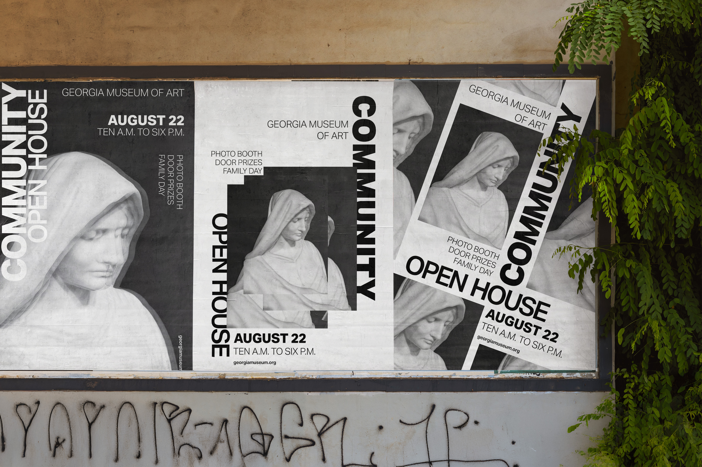
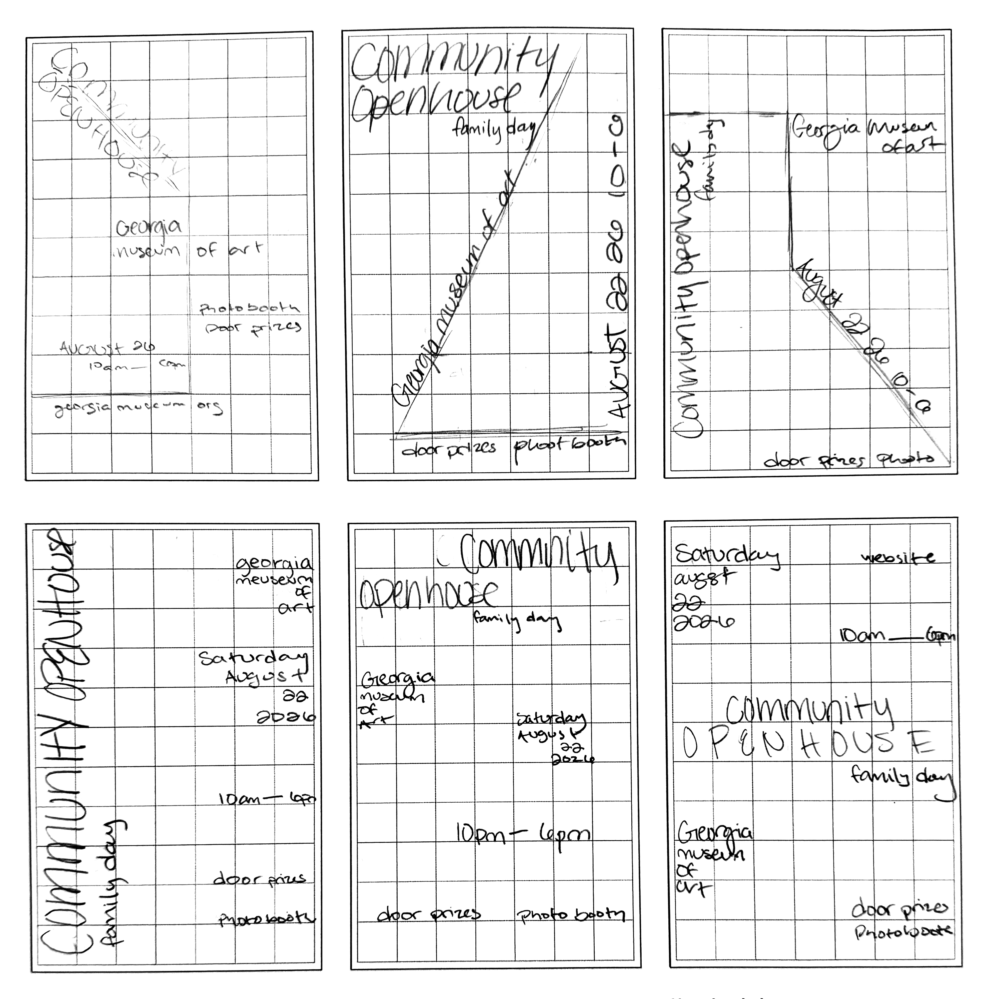
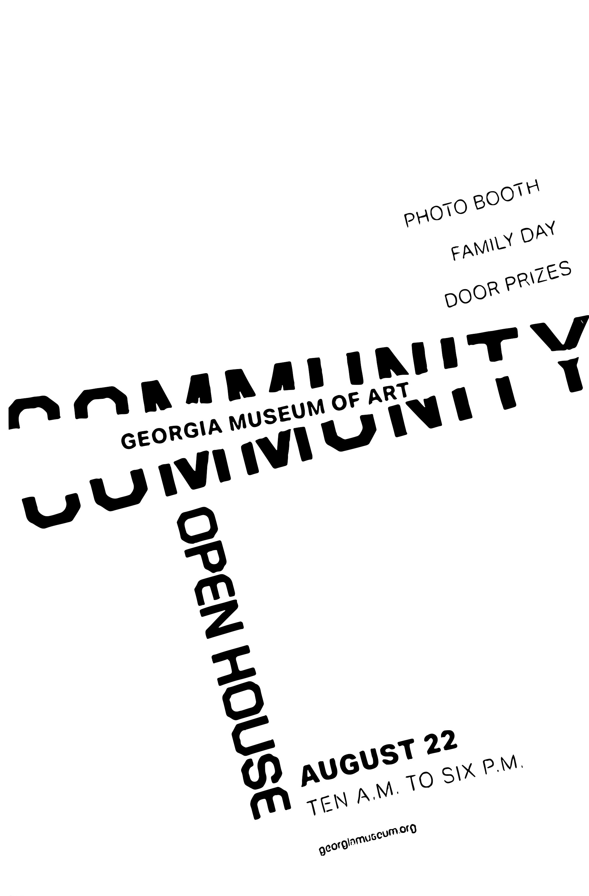
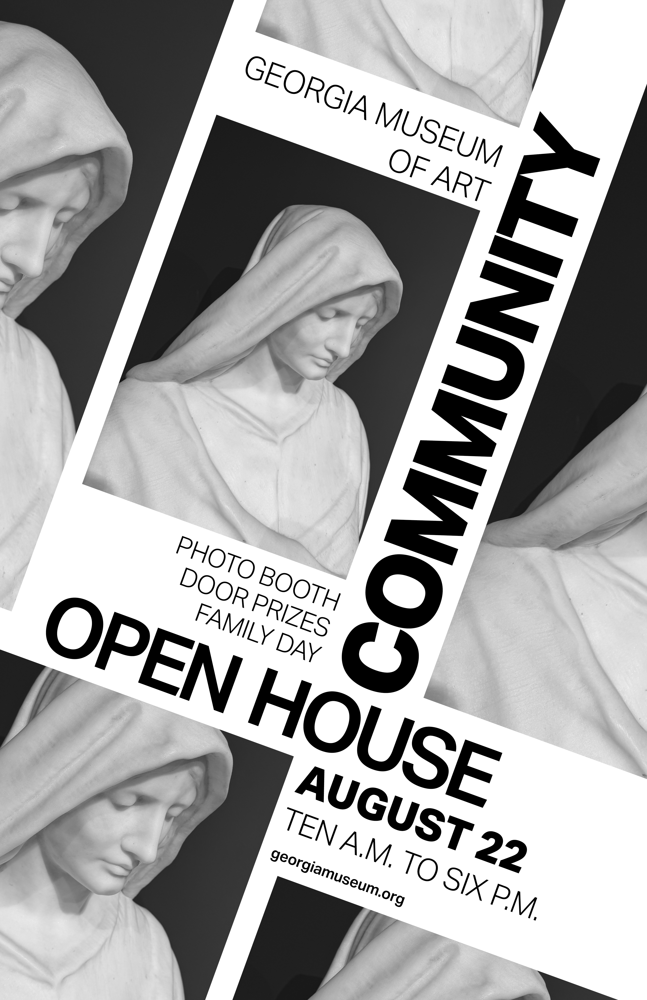
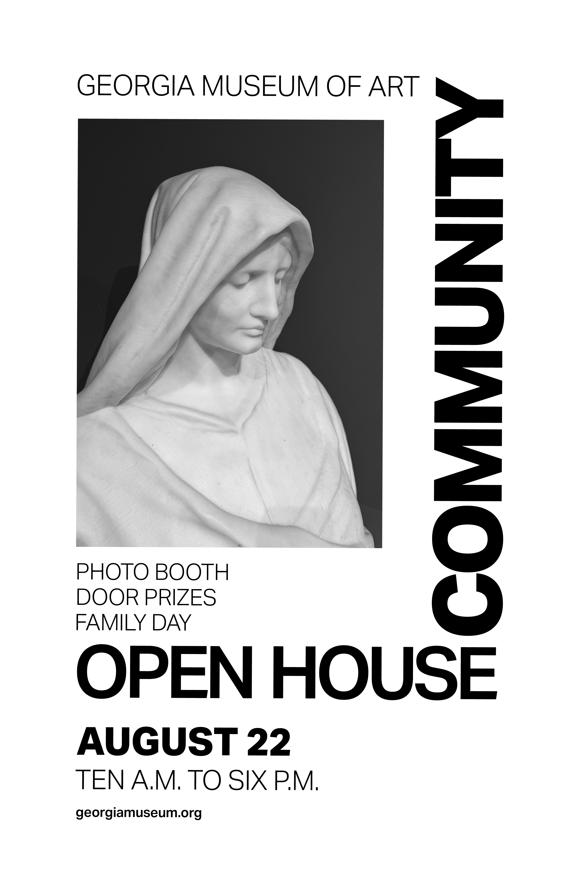
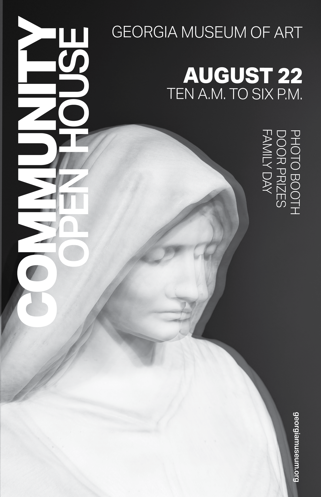
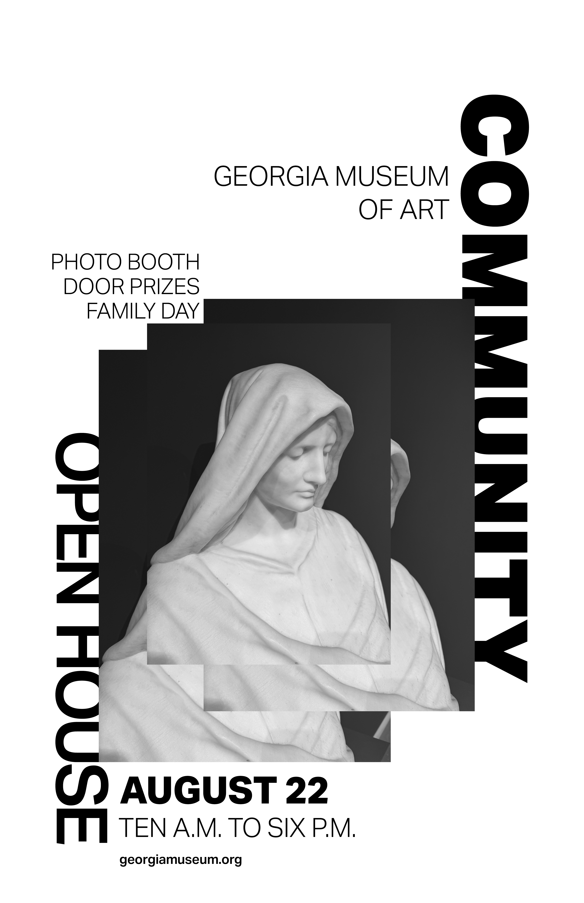

← All projects / Project 05
Promotional material · Print design
Georgia Museum of Art Posters
An event promotion concept designed to support the Georgia Museum of Art.
- Discipline
- Print design
- Focus
- Typography, layout, promotional design
- Project
- 05 / 06
Overview.
This project explores poster design for the Georgia Museum of Art. I developed a set of promotional graphics, using research, sketching, and visual iteration to explore how typography, imagery, and composition could work together across a related series.

Process:
Sketches & Exploration.
I began by sketching and collecting visual directions before refining selected ideas digitally. This early stage let me test different compositions and consider how the poster series could feel distinctive while remaining connected as a set.


Final
Poster Series.
The final designs bring the exploration into a series of finished posters. Viewed together, the pieces show how a shared project brief can support multiple compositions while keeping the work cohesive as a collection.




Reflection.
This project gave me the opportunity to work through the poster-design process from initial sketches to polished promotional graphics. It strengthened my approach to visual exploration, composition, and presenting a series of designs as a considered body of work.